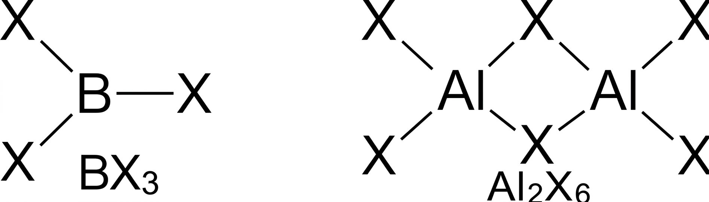
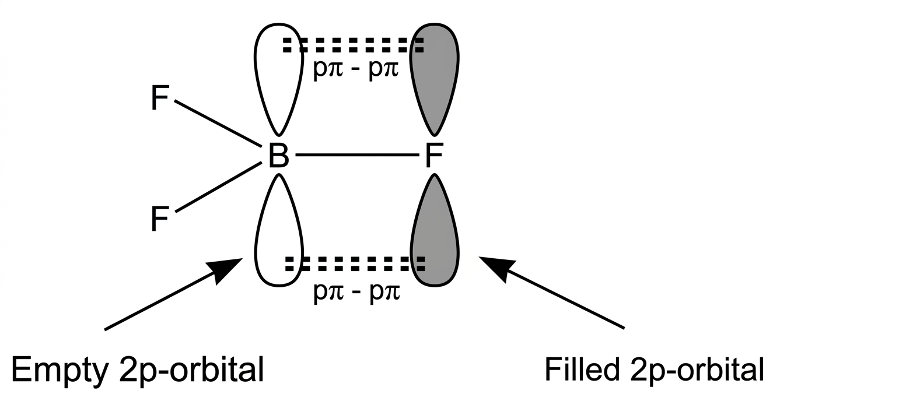
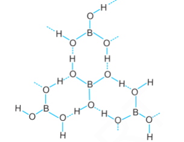
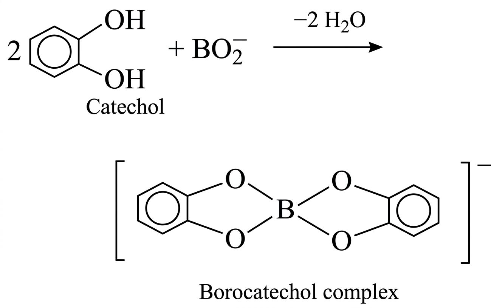
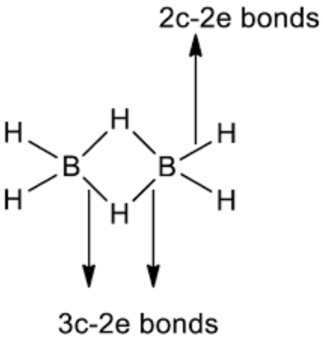

The elements of group 13 are
B - Boron Al - Aluminium Ga - Gallium In - Indium TI - ThalliumThis group elements show a wide variation in properties. Boron is a typical non-metal, aluminium is a metal but shows many chemical similarities to boron, and gallium, indium and thallium are almost exclusively metallic in character. Al is the third most abundant element found in the earth's crust after oxygen and silicon.
Pure crystalline boron is a black, lustrous semiconductor; i.e., it conducts electricity like a metal at high temperatures
and is almost an insulator at low temperatures. It is hard enough (9.3 on Mohs scale) to scratch some abrasives, such as
carborundum, but too brittle for use in tools. It constitutes about 0.001 percent by weight of Earth's crust. Boron occurs
combined as borax, kernite, and tincalconite (hydrated sodium borates), the major commercial boron minerals, especially
concentrated in the arid regions of California, and as widely dispersed minerals such as colemanite, ulexite, and tourmaline.
Sassolite-natural boric acid-occurs especially in Italy.
| Element Properties | |
|---|---|
| Atomic Number | 5 |
| Atomic Weight | [10.806, 10.821] |
| Melting Point | 2,200 °C (4,000 °F) |
| Boiling Point | 2,550 °C (4,620 °F) |
| Specific Gravity | 2.34 (at 20 °C [68 °F]) |
| Oxidation State | +3 |
| Electron Configuration | 1s2 2s2 2p1 |
Aluminum (Al), chemical element, a lightweight silvery white metal of main Group 13 (IIIa, or boron group) of the periodic table.
Aluminum is the most abundant metallic element in Earth's crust and the most widely used nonferrous metal. Because of its chemical
activity, aluminum never occurs in the metallic form in nature, but its compounds are present to a greater or lesser extent in
almost all rocks, vegetation, and animals. Aluminum is concentrated in the outer 16 km (10 miles) of Earth's crust, of which it
constitutes about 8 percent by weight; it is exceeded in amount only by oxygen and silicon. The name aluminum is derived from
the Latin word alumen, used to describe potash alum, or aluminum potassium sulfate, KAl(SO₄)₂.12H₂O.
| Element Properties | |
|---|---|
| atomic number | 13 |
| atomic weight | 26.9815384 |
| melting point | 660 °C (1,220 °F) |
| boiling point | 2,467 °C (4,473 °F) |
| specific gravity | 2.70 (at 20 °C [68 °F]) |
| valence | 3 |
| electron configuration | 1s²2s²2p⁶3s²3p¹ |
Gallium (Ga), chemical element, metal of main Group 13 (IIIa, or boron group) of the periodic table. It liquefies just above room temperature.
Though widely distributed at Earth's surface, gallium does not occur free or concentrated in independent minerals, except for gallite (CuGaS₂),
which is rare and economically insignificant. Gallium is extracted as a by-product from zinc blende, iron pyrites, bauxite, and germanite.
| Element Properties | |
|---|---|
| atomic number | 31 |
| atomic weight | 69.723 |
| melting point | 29.76 °C (85.57 °F) |
| boiling point | 2,403 °C (4,357 °F) |
| specific gravity | 5.904 (at 29.6 °C [85.3 °F]) |
| oxidation state | +3 |
| electron config. | [Ar]3d104s24p1 |
Indium has a brilliant silvery-white luster. It was discovered (1863) by German chemists Ferdinand Reich and Hieronymus Theodor Richter
while they were examining zinc ore samples. The presence of a predominant indigo spectral line suggested the name.
Indium is softer than lead and quite plastic. It can be scratched with a fingernail and can undergo almost limitless deformation.
Like tin, the pure metal emits a high-pitched "cry" when bent. Indium is about as rare as silver.
Earth's crust contains on the average about 0.05 part per million indium by weight.
The element does not occur uncombined or in independent minerals but occurs as a trace in many minerals,
particularly those of zinc and lead, from which it is obtained as a by-product.
| Element Properties | |
|---|---|
| atomic number | 49 |
| atomic weight | 114.82 |
| melting point | 156.61 °C (313.89 °F) |
| boiling point | 2,080 °C (3,776 °F) |
| specific gravity | 7.31 (at 20 °C [68 °F]) |
| oxidation states | +1, +3 |
| electron config. | [Kr]4d105s25p1 |
Thallium (Tl), chemical element, metal of main Group 13 (IIIa, or boron group) of the periodic table, poisonous and of limited commercial value.
Like lead, thallium is a soft, low-melting element of low tensile strength. Freshly cut thallium has a metallic lustre that dulls to bluish gray
upon exposure to air. The metal continues to oxidize upon prolonged contact with air, generating a heavy nonprotective oxide crust.
Thallium dissolves slowly in hydrochloric acid and dilute sulfuric acid and rapidly in nitric acid.
| Element Properties | |
|---|---|
| atomic number | 81 |
| atomic weight | 204.37 |
| melting point | 303.5 °C (578.3 °F) |
| boiling point | 1,457 °C (2,655 °F) |
| specific gravity | 11.85 (at 20 °C [68 °F]) |
| oxidation states | +1, +3 |
| electron config. | [Xe]4f145d106s26p1 |
| Element | At. No. | Electronic Config. | Valence Shell Config. |
|---|---|---|---|
| B | 5 | [He] 2s² 2p¹ | 2s² 2p¹ |
| Al | 13 | [Ne] 3s² 3p¹ | 3s² 3p¹ |
| Ga | 31 | [Ar] 3d¹⁰ 4s² 4p¹ | 4s² 4p¹ |
| In | 49 | [Kr] 4d¹⁰ 5s² 5p¹ | 5s² 5p¹ |
| Tl | 81 | [Xe] 4f¹⁴ 5d¹⁰ 6s² 6p¹ | 6s² 6p¹ |
Boron is unreactive in crystalline form. Aluminium forms a very thin oxide layer on the surface which protects the metal from further attack. Amorphous boron and aluminium metal on heating in air form B₂O₃ and Al₂O₃ respectively. With dinitrogen at high temperature they form nitrides.
Reactions:
2E(s) + 3O₂(g) → 2E₂O₃(s)
2E(s) + N₂(g) → 2EN(s)
The nature of these oxides varies down the group. Boron trioxide is acidic and reacts with basic (metallic) oxides forming metal borates. Aluminium and gallium oxides are amphoteric and those of indium and thallium are basic in their properties.
2Al(Hg) + 6H₂O → 2Al(OH)₃ + 3H₂ + Hg
Boron does not react with acids and alkalies even at moderate temperature; but aluminium dissolves in mineral acids and aqueous alkalies and thus shows amphoteric character. Aluminium dissolves in dilute HCl and liberates dihydrogen.
2Al(s) + 6HCl(aq) → 2Al³⁺(aq) + 6Cl⁻(aq) + 3H₂(g)
However, concentrated nitric acid renders aluminium passive by forming a protective oxide layer on the surface. Aluminium also reacts with aqueous alkali and liberates dihydrogen.
2Al(s) + 2NaOH(aq) + 6H₂O(l) → 2Na⁺[Al(OH)₄]⁻(aq) + 3H₂(g)
&emsp&emspSodium tetrahydroxoaluminate(III)
B₂O₃ + 3C + 3Cl₂ → 2BCl₃ + 3CO
Al₂O₃ + 3C + 3Cl₂ → 2AlCl₃ + 3CO

It increases in the order:
BF3 < BCl3 < BBr3 < BI3
This order can be explained on the basis of the tendency of halogen atom to back donate its lone pair of electrons to the empty p-orbital of B atom through pπ–pπ bonding.
As this tendency is higher in case of F (due to identical size of 2p-orbitals of B and F), the electron deficiency of B decreases and thus BF3 behaves as the weakest Lewis acid.

Boron shows anomalous behaviour as compared to other members of the group, due to the following reasons:
Borax is the most important compound of boron. It is a white crystalline solid of formula Na2B4O7·10H2O. In fact, it contains the tetranuclear units [B4O5(OH)4]2− and the correct formula is Na2[B4O5(OH)4]·8H2O. Borax dissolves in water to give an alkaline solution.
Na2B4O7 + 7H2O → 2NaOH + 4H3BO3
(Orthoboric acid)
On heating, borax first loses water molecules and swells up. On further heating, it turns into a transparent liquid which solidifies into a glass-like material known as borax bead.
Na2B4O7·10H2O → Na2B4O7
→ 2NaBO2 + B2O3
(Sodium metaborate + Boric anhydride)
The metaborates of many transition metals have characteristic colours. Therefore, the borax bead test can be used to identify them in the laboratory.
For example, when borax is heated in a Bunsen burner flame with copper salt on a loop of platinum wire in reducing flame, a green coloured bead is formed.
CuO + B2O3 → Cu(BO2)2
On heating in reducing flame we get CuBO2 which on cooling gives green colour.
Orthoboric acid, H3BO3 is a white crystalline solid with a soapy touch. It is sparingly soluble in water but highly soluble in hot water. It can be prepared by acidifying an aqueous solution of borax.
Na2B4O7 + 2HCl + 5H2O → 2NaCl + 4B(OH)3
It is also formed by the hydrolysis (reaction with water or dilute acid) of most boron compounds (halides, hydrides, etc.).
It has a layered structure in which planar BO3 units are joined by hydrogen bonds
between hydrogen and oxygen atoms.

Boric acid is a weak monobasic acid. It is not a protonic acid but acts as a Lewis acid by accepting electrons from a hydroxyl ion:
B(OH)3 + 2H2O → [B(OH)4]− + H3O+
On heating above 370K, orthoboric acid forms metaboric acid, HBO2, which on further heating yields boric oxide, B2O3.
H3BO3 →HBO2 →B2O3
Boric acid is a weak monobasic acid. It can be titrated against NaOH using methyl orange as indicator only in the presence of polyhydroxy compounds like catechol, mannitol, glycerol or sugars. This can be explained as follows:
During the titration, sodium metaborate is formed:
B(OH)3 + NaOH → Na+ BO2− + 2H2O
which undergoes excessive hydrolysis to give back H3BO3 and NaOH and the end point of the titration is not sharp.
NaBO2 + 2H2O ⇌ B(OH)3 + NaOH
However, when polyhydroxy compounds as mentioned above are added to the titration solution, the metaborate ion so produced combines with them to form a complex and the hydrolysis of BO2− ion is prevented.
Example with catechol:

As a result, boric acid behaves as a strong monobasic acid and the end point in the above titration can be easily detected.
The simplest boron hydride known is diborane.
4BF3 + 3LiAlH4 → 2B2H6 + 3LiF + 3AlF3
2NaBH4 + I2 → B2H6 + 2NaI + H2
2BF3 + 6NaH → B2H6 + 6NaF (450K)
Diborane is a colourless, highly toxic gas with a boiling point of 180 K. It catches fire spontaneously upon exposure to air.
B2H6 + 3O2 → B2O3 + 3H2O
ΔH° = −1976 kJ mol−1
B2H6(g) + 6H2O(l) → 2B(OH)3(aq) + 6H2(g)
B2H6 + 2L → 2BH3·L
Reaction of ammonia with diborane gives initially B2H6.2NH3 which is formulated as [BH2(NH3)2]+[BH4]-; further heating gives borazine, B3N3H6 known as "inorganic benzene" in view of its ring structure with alternate BH and NH groups. 3B2H6 + 6NH3 → 3[BH2(NH3)2]+[BH4]- →2B3N3H6 + 12H2
Diborane contains four terminal B–H bonds (2-centre 2-electron) and two bridging B–H–B bonds
(3-centre 2-electron).

2MH + B2H6 → 2M[BH4] (M = Li or Na)
LiBH4 and NaBH4 are important reducing agents.
Boron is an extremely hard refractory solid with high melting point, low density and very low electrical conductivity. Boron fibres are used in making bullet-proof vests and light composite materials for aircraft.
The isotope 10B has a high ability to absorb neutrons. Therefore, borides are used in the nuclear industry as protective shields and control rods.
Borax and boric acid are widely used in the manufacture of heat-resistant glasses (e.g., Pyrex), glass wool and fibreglass.
Borax is used as a flux for soldering metals, in heat-, scratch- and stain-resistant coatings for earthenware and as a constituent of medicinal soaps.
An aqueous solution of orthoboric acid is used as a mild antiseptic.
Aluminium is a bright silvery-white metal with high tensile strength and high electrical and thermal conductivity. On a weight basis, its electrical conductivity is about twice that of copper.
Aluminium forms alloys with Cu, Mn, Mg, Si and Zn. It is widely used in making pipes, tubes, rods, wires, plates and foils.
It finds applications in packaging, utensils, construction, aeroplanes and the transportation industry. However, its domestic use has reduced due to concerns about toxicity.